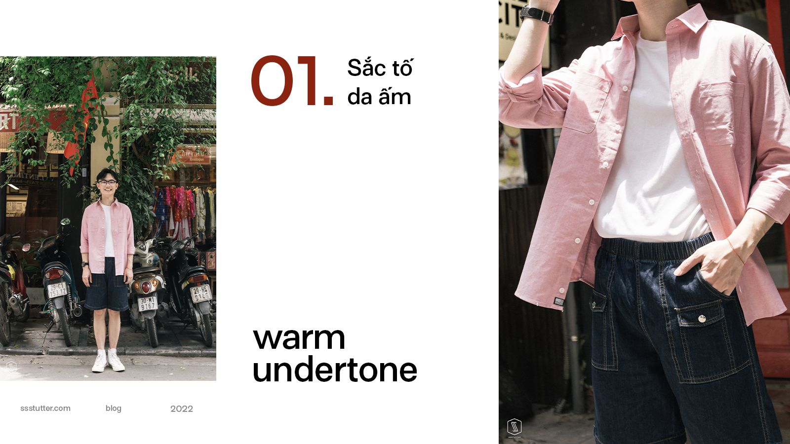

6 BÍ QUYẾT PHỐI MÀU GIÚP OUTFIT CỦA BẠN TRỞ NÊN NỔI BẬT HƠN
Dũng Nguyễn
Content Creator
BỎ TÚI 6 BÍ QUYẾT PHỐI MÀU GIÚP ỌUTFIT CỦA BẠN NỔI BẬT HƠN
Tổng quan về kiến thức màu sắc & phối đồ: Phối đồ không chỉ mang vẻ đẹp nghệ thuật nhưng điều đó còn mang tính khoa học. Dựa trên Bánh xe màu sắc được phát minh bởi Isaac Newton với 7 màu sắc cơ bản đó là: đỏ, cam, vàng, lục, lam, chàm, tím. Hãy cùng tìm hiểu và biến outfit của bạn trở nên độc đáo hơn nhé!
